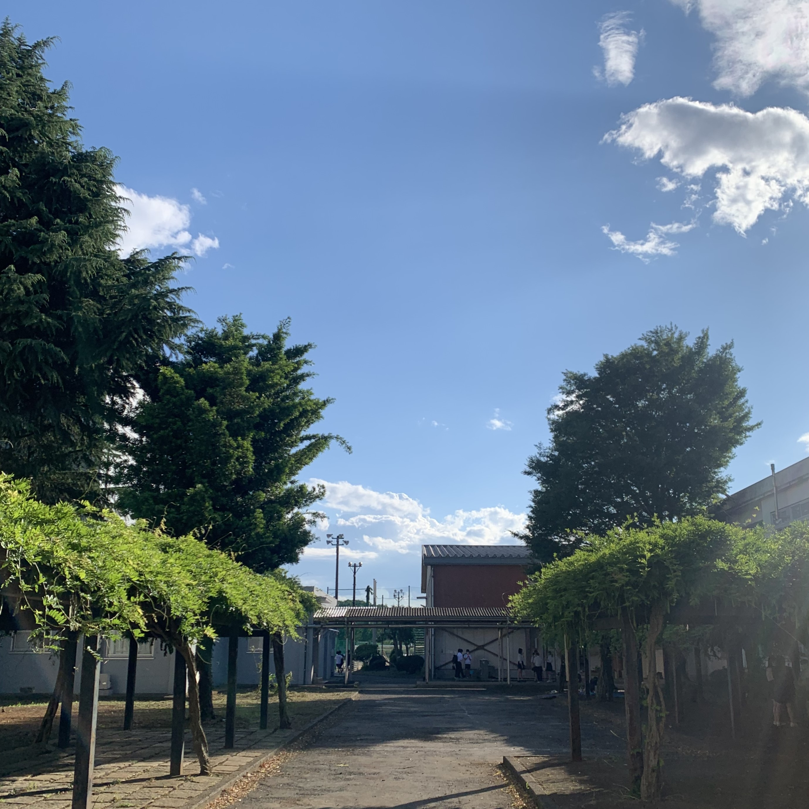
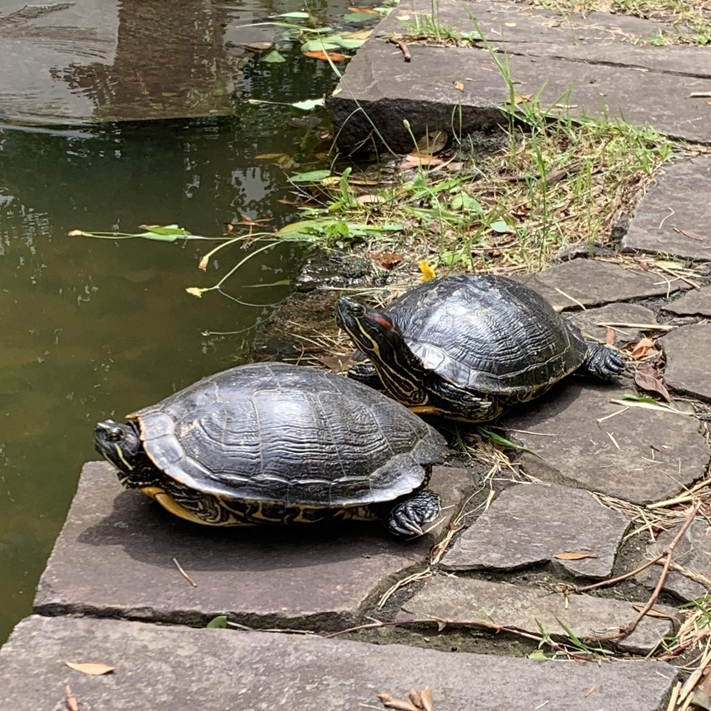

ABOUT
ご紹介
翠翔祭実行委員会
2023年度全日制翠翔祭実行委員会委員長
樋口 暢広
このたび、無事に翠翔祭を実施できることを喜ばしく思います。今年度の翠翔祭では、４年ぶりに再開した調理販売をはじめ、様々な企画が立ち並びます。翠嵐生の創意工夫に満ちた企画をどうぞお楽しみください。翠翔祭の開催にあたってご協力いただいた多くの方々に、この場を借りて感謝申し上げます。本ホームページでは、当日の企画や発表についての紹介や校内の混雑情報を随時公開してまいります。ぜひご活用ください。

2023年度定時制翠翔祭実行委員会委員長
夏見 希海
昨年度に引き続き，今年度も無事に翠翔祭を迎えられたこと，大変嬉しく思います。
今年度は在籍中の生徒の母国のエスニック料理を販売します。
母国への誇りと愛，そして皆さんに美味しく味わっていただきたいという思いを込めて，定時制一同励んでおります。
ぜひ一度足を運んでみてださい。

このウェブサイトを作成するにあたって
| ウェブサイト・SUIRAN NAVI作成
吉川 朋希
昨年度の翠翔祭に引き続き、ホームページを製作しました。
また、簡易パンフレットとしてSUIRAN NAVIを配布し、詳細な情報をウェブサイトに掲載することとしました。
予備知識が何もなく、0からのスタートでしたが、何とか完成させることが出来ました。
このホームページとともに、翠翔祭を楽しんでいただければ幸いです。
2023年度翠翔祭実行委員会総務部のご紹介
ここで翠翔祭の企画運営において、中核を担ってきた翠翔祭実行委員会総務部のメンバーをご紹介させていただきます。